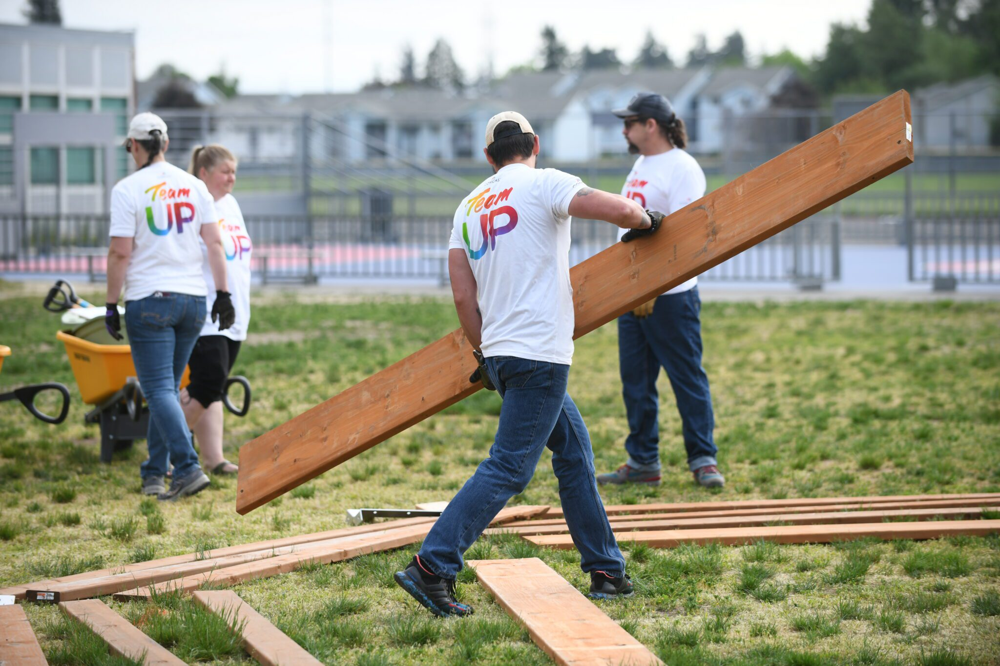

Aspiring Full-Stack Software Developer
I enjoy solving problems through clean, efficient code and continuously exploring new technologies. I thrive on curiosity, collaboration, and the challenge of building smart, scalable solutions. Whether working independently or with a team, I’m committed to writing thoughtful, maintainable software.
Skills
Previous Experience
Advanced Services Technician
Comcast, Xfinity – 7900 NE Killingsworth ST, Portland OR, 97218
08/2015 to 03/2024
Comcast, Xfinity – 7900 NE Killingsworth ST, Portland OR, 97218
08/2015 to 03/2024
- Improved customer satisfaction through adherence to quality assurance standards.
- Diagnosed and resolved technical issues for over 50 customer systems weekly, reducing service downtime by 20%.
- Streamlined task prioritization to consistently meet 100% of production deadlines over eight years.
- Created detailed service logs improving follow-up efficiency and customer satisfaction.
- Conducted functional and stress tests on network systems, ensuring optimal performance and reliability.
- Applied technical expertise to install and troubleshoot diverse devices.
- Conducted system performance tests using tools such as multimeters, tone generators, and cable testers.
- Developed and enforced safety protocols.
- Installed and maintained cable systems across 200+ residential and commercial properties monthly.
Plaid Pantry – Assistant Manager
- Oversaw store operations, including inventory tracking, staff coordination, and opening/closing procedures.
- Trained and supervised new employees, developing leadership and mentorship skills.
- Maintained high accuracy under pressure while managing customer transactions and shift responsibilities.
- Led daily sales floor operations and collaborated on visual merchandising and promotions.
- Provided advanced product knowledge and customer support.
- Scheduled staff shifts and coordinated launch events.
- Managed team scheduling, prep planning, and shift coverage in a fast-paced environment.
- Implemented process improvements that improved speed and accuracy during high-traffic hours.
- Upheld cleanliness, safety, and quality control standards.
TeamUp – Community Engagement Volunteer
- Helped run events and group activities for local kids.
- Worked with organizers to plan and set up events.
- Worked with team to ensure all goals were met for events.

Red Cross – Blood Drive Volunteer & Greeter
- Helped people check in and feel welcome at blood drives.
- Answered questions and guided people through the process.
- Helped promote health and keep things running smoothly.